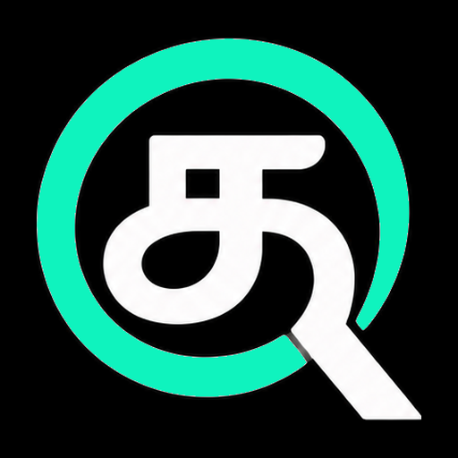

பற்றி
qos பற்றி
qos — தமிழ் OS. இ-தமிழ் எழுத்துப்பெயர்ப்பில் த என்பது q.
ஏன் qos
கணினி வைத்திருப்பவர்களை விடப் பல மடங்கு மக்களிடம் ஆண்ட்ராய்டு கைபேசி உள்ளது. அந்தக் கைபேசியை qos உண்மையான நிரலாக்கக் கணினியாக மாற்றுகிறது; அதனால் மடிக்கணினி வாங்காமலேயே, தமிழிலோ ஆங்கிலத்திலோ, எவரும் நிரலாக்கம் கற்று மென்பொருள் கட்டலாம்.
திறந்த மூலத்தின் மேல் கட்டப்பட்டது
qos, Termux-ஐயும், qos Desktop, Termux:X11-ஐயும் அடிப்படையாகக் கொண்டவை; இரண்டும் GPLv3. உள்ளே உள்ள கருவிகள் Termux தொகுப்புத் திரட்டுகளிலிருந்து வருகின்றன. அவற்றை உருவாக்கும் அனைவருக்கும் நன்றி.
தனியுரிமை
qos-இல் பகுப்பாய்வோ தொலைஅளவீடோ இல்லை; கணக்கும் தேவையில்லை. இந்த இணையதளம் குக்கீகளை அமைப்பதில்லை, பிற தளங்களிலிருந்து எதையும் ஏற்றுவதில்லை.
உரிமம்
qos-உம் qos Desktop-உம் GNU General Public License v3 உரிமத்தின் கீழ் கட்டற்ற மென்பொருள். மூல நிரல் GitHub-இல்: qos, qos Desktop, இந்த இணையதளம்.
அடையாளம்
சின்னமும் நிறங்களும்
qos-ஐச் சுட்டிக்காட்ட qos சின்னத்தைப் பயன்படுத்துங்கள். கருப்புப் பின்னணியிலேயே வைத்திருங்கள்; அதன் வடிவங்களையோ நிறங்களையோ மாற்றாதீர்கள்.




நிறங்கள்
#10F3BE qos பச்சைநீலம்
#000000 கருப்பு